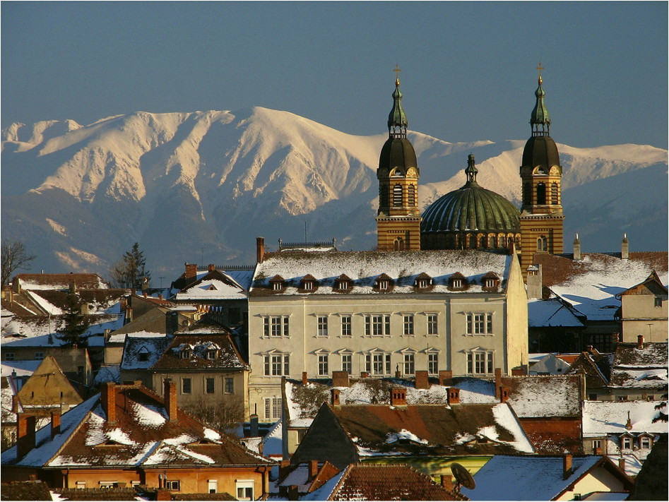

Curiozitatile Sibiului
Sibiul reuseste sa atraga an de an un numar impresionant de turisti, atat romani cat si straini, chiar si in perioada aceasta de pandemie. Un exemplu este Festivalul International de Teatru care s-a desfasurat pe o perioada de 10 zile, cu 2000 de artisti din 38 de tari, 600 de evenimente si 100 de spectacole online.
Iata cateva momente din istorie care au avut loc in Sibiu si pe care trebuie sa le stii!

- Primul spital atestat din tara, in anul 1292
- Curios cand si unde a aparut primul calendar din Romania? Sibiu, 1612
- In anul 1525, se atesta prima tipografie din Transilvania si a doua ca vechime de pe teritoriul Romaniei
- Prima atestare a unei scoli din tara, in 1380
- Podul Minciunilor este primul pod de fonta din Romania, construit in 1859
- Primul oras din Transilvania care introduce un mijloc de transport in comun electric fara sine, stramosul troleibuzului
- In anul 1944 se infiinteaza “Junii Sibiului”, primul ansamblu folcoric din tara noastra
- Se deschide primul muzeu de etnografie universala din Romania, in 1993. Muzeul “Franz Binder” adaposteste o mumie cu sarcofag, vechi de peste 2000 de ani.
- In anul 1555, Conrad Hass, inventator austriac si precursor al zborului cu racheta, experimenta prima racheta in trepte din lume
- Se tipareste prima carte in limba romana din Ardeal, in 1544. Din pacate, aceasta prima editie a cartii a ars intr-un incendiu. In anul 1562 a aparut cea de-a doua versiune